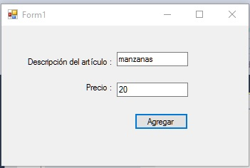
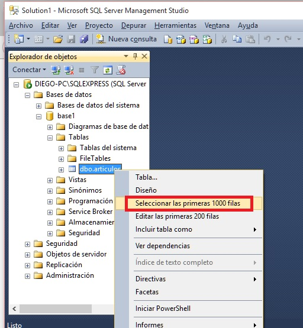
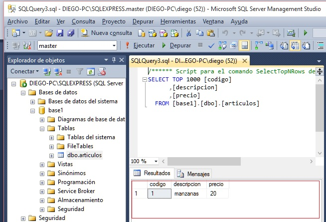

Vimos en el concepto anterior como conectarnos al servidor de SQL Server y seleccionar una base de datos. Veremos ahora como pedir que el SQL Server ejecute un comando "INSERT".
Trabajaremos con la base de datos "base1" que creamos en conceptos anteriores y con la tabla "articulos" que también creamos previamente con la estructura:
codigo int primary key identidad descripcion varchar 50 precio float
Problema
Implementar una interfaz visual para el alta o carga de registros en la tabla artículos.
Crearemos un proyecto llamado "pruebabasedatos2" con la siguiente interfaz visual:

El código fuente de la aplicación para efectuar altas es:
using System;
using System.Collections.Generic;
using System.ComponentModel;
using System.Data;
using System.Drawing;
using System.Linq;
using System.Text;
using System.Threading.Tasks;
using System.Windows.Forms;
using System.Data.SqlClient;
namespace PruebaBaseDatos2
{
public partial class Form1 : Form
{
public Form1()
{
InitializeComponent();
}
private void button1_Click(object sender, EventArgs e)
{
SqlConnection conexion = new SqlConnection("server=DIEGO-PC\\SQLEXPRESS ; database=base1 ; integrated security = true");
conexion.Open();
string descri = textBox1.Text;
string precio = textBox2.Text;
string cadena = "insert into articulos(descripcion,precio) values ('" + descri + "'," + precio + ")";
SqlCommand comando = new SqlCommand(cadena, conexion);
comando.ExecuteNonQuery();
MessageBox.Show("Los datos se guardaron correctamente");
textBox1.Text = "";
textBox2.Text = "";
conexion.Close();
}
}
}
Lo primero que hacemos para el evento Click del botón es crear un objeto de la clase SqlConnection y proceder a abrir la conexión:
SqlConnection conexion = new SqlConnection("server=DIEGO-PC\\SQLEXPRESS ; database=base1 ; integrated security = true");
conexion.Open();
Tenemos que guardar en la variable cadena un comando INSERT válido tomando los datos ingresados en los dos TextBox:
string descri = textBox1.Text;
string precio = textBox2.Text;
string cadena = "insert into articulos(descripcion,precio) values ('" + descri + "'," + precio + ")";
Como el campo descripción es de tipo varchar debemos incluir las comillas simples:
'" + descri + "'
Y como el precio es float no incluimos las comillas simples:
" + precio + "
Si cargamos por teclado por ejemplo el producto: manzanas y con un precio : 20, luego la variable cadena tiene el valor:
insert into articulos(descripcion,precio) values ('manzanas',20);
Como podemos ver es una forma sencilla de elaborar un comando SQL siempre y cuando tengamos pocos campos que inicializar.
Creamos un objeto de la clase SqlCommand y le pasamos al constructor un string con el comando SQL y la referencia a la conexión.
SqlCommand comando = new SqlCommand(cadena, conexion);
Seguidamente llamamos al método EcecuteNonQuery que procede a comunicarse con el servidor para que se ejecute el comando SQL configurado en la línea anterior:
comando.ExecuteNonQuery();
Ejecutemos el programa y realicemos la carta de un artículo:
Por el momento la única forma que tenemos para consultar la tabla "articulos" es abrir el "Microsoft SQL Server Management Studio" seleccionar la base de datos "base1" y luego presionar el botón derecho del mouse eligiendo la opción "Seleccionar las primeras 1000 filas":
Y de esta forma poder ver los registros que almacena la tabla "articulos":
